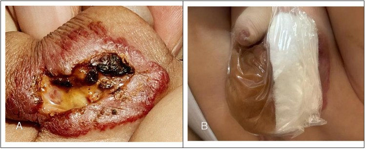
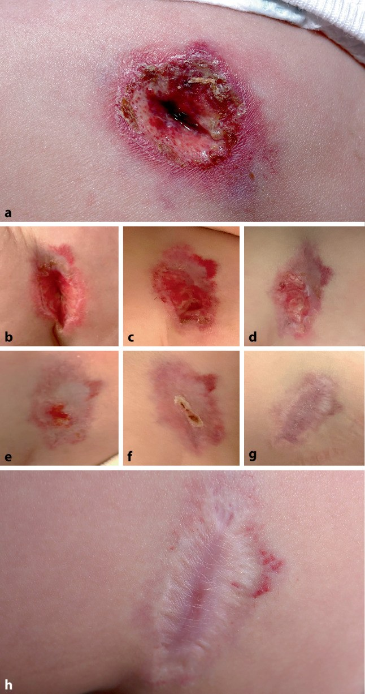
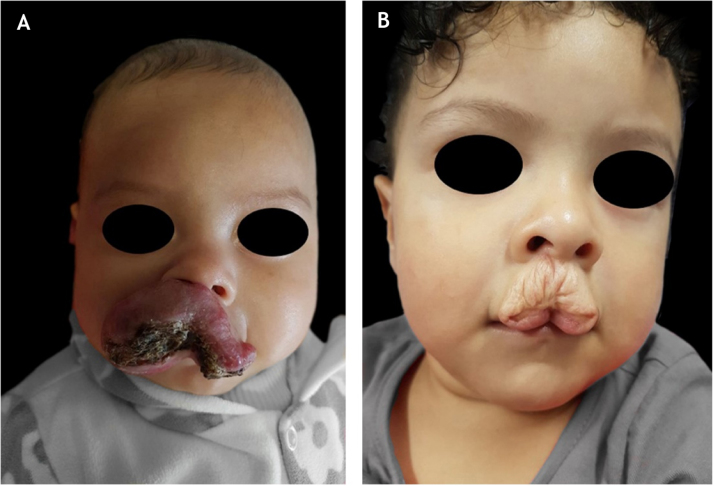
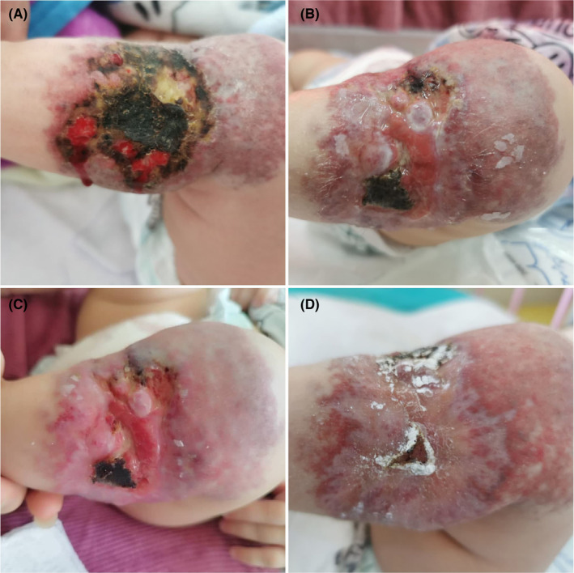

3071 — U máu nhũ nhi LOÉT: đau – nhiễm – chảy máu, khi nào propranolol + timolol + laser, và sẹo về sau
Tags: pattern:u-mau-loet pattern:chay-mau pattern:dau pattern:nhiem-trung vung:da-dau-mat-co vung:sinh-duc anatomy:da protocol:sieu-am-Doppler protocol:propranolol protocol:timolol protocol:PDL score:FLACC
Mức chắc chắn (certainty): tổng hợp y văn (literature synthesis) — ghép hướng dẫn thực hành Nhật 2022 về u mạch máu/dị dạng mạch (J Dermatol 2026, PMC13150677), đoàn hệ 190 trẻ u máu nhũ nhi (An Bras Dermatol 2022, PMC8799848), nghiên cứu 87 tổn thương theo dõi sẹo (J Dermatol 2026, PMC13555119), 2 ca nguyên văn u máu loét (Front Pediatr 2026 PMC13180811; Wien Klin Wochenschr 2025 PMC12592269), ca nhiễm Klebsiella (Clin Case Rep 2024 PMC11222967), loạt phẫu thuật 95 ca (Int J Surg 2023 PMC10389552) và ca timolol tại chỗ (Cureus 2024 PMC11420686). Không có ca do nhóm tự chụp.
Câu hỏi thực hành: bé gái 5 tháng tuổi, u máu ở môi dưới đã loét 1 tuần, quấy khóc khi bú, chảy máu lấm tấm, không sốt. Câu hỏi: có nhập viện không, có dùng kháng sinh không, dùng propranolol hay timolol, có cần laser, và sẹo về sau ra sao? Bài chốt năm quyết định: (1) loét là biến chứng hay gặp (~15,8%), đứng hàng đầu ở môi dưới (30%) và vùng hậu môn–sinh dục (50%); (2) propranolol uống là điều trị nền — rút ngắn thời gian loét liền và giảm đau; (3) timolol tại chỗ chỉ đủ cho tổn thương NÔNG (siêu âm ≤ 3 mm) và nhỏ (≤ 3 cm); (4) kháng sinh chỉ khi có dấu hiệu nhiễm, không dùng thường quy; (5) sẹo là quyết định — 31% có di chứng thẩm mỹ, thể nốt và tổn thương ≥ 3 cm² có nguy cơ sẹo nặng nhất.
1. Tổng quan bệnh học – cơ chế hình ảnh: vì sao loét, vì sao đau, vì sao chảy máu
- Bản chất u: u máu nhũ nhi (infantile hemangioma, IH) là tăng sinh tế bào nội mô mạch máu, GLUT-1 dương (dấu hiệu của nhau thai — dùng để phân biệt với u mạch khác), gặp ở 4–5% trẻ sinh sống; đa số tự thoái triển nhưng 10–15% được xếp nguy cơ cao vì kích thước, vị trí, tốc độ phát triển hoặc biến chứng (PMC11420686, PMC13702952).
- Vì sao loét: u tăng sinh nhanh trong 3–5 tháng đầu làm lớp biểu bì bị căng, thiếu máu nuôi; thêm ma sát – ẩm – cọ xát ở vị trí gấp (môi, cổ, hậu môn–sinh dục, nếp bẹn) → hoại tử bề mặt và loét. Đúng vậy, loét hay gặp ở môi dưới 30% (21/71), cổ 25% (25/100), quanh hậu môn–sinh dục 50% (46/93), thấp nhất ở mi trên (p = 0,0140); 35% tổn thương loét đang ở pha tăng sinh; thể hỗn hợp/đoạn tính loét nhiều hơn (PMC13150677).
- Tần suất: trong đoàn hệ đa trung tâm 1.096 trẻ, loét gặp 173 ca (15,8%), tuổi trung vị 4,0 tháng; các nghiên cứu khác báo 5–21%, một đoàn hệ tiến cứu 16% (PMC13150677, PMC8799848). Loét làm tăng nhu cầu điều trị gấp 6,86 lần (OR 6,86; KTC 3,70–12,71; p < 0,0001) (PMC13150677).
- TẠI SAO đau: loét mất lớp biểu bì che phủ → đầu mút thần kinh cảm giác ở trung bì lộ ra, kích thích bởi nước tiểu, phân, sữa và ma sát. Vì vậy trẻ bú kém, quấy, sụt cân — đau là lý do nhập viện và là chỉ định điều trị, không chỉ "thẩm mỹ".
- TẠI SAO chảy máu: bề mặt u là mao mạch tăng sinh, thành mỏng, không có lớp niêm mạc bảo vệ; chảy máu gặp ở 78/173 tổn thương loét (41%) — nhẹ 29%, trung bình 6%, nặng 2%; 2 ca phải truyền máu vì chảy máu nặng (PMC13150677). Chảy máu ồ ạt hiếm nhưng là biến cố cấp cứu.
- TẠI SAO nhiễm: hàng rào da mất, vết loét ẩm, vùng hậu môn–sinh dục bị phân/nước tiểu → bội nhiễm. Nhiễm là biến chứng không thường gặp nhưng có thể nặng: ca 6 tháng tuổi nhiễm Klebsiella pneumoniae, phải đổi từ cefepime sang piperacillin/tazobactam, tiếp tục propranolol ≥ 1 năm (PMC11222967). Vì vậy không đồng nghĩa "loét = nhiễm" — cần tiêu chuẩn lâm sàng/vi sinh.
- TẠI SAO hình ảnh học lại quan trọng ở đây: độ dày và độ sâu quyết định đường điều trị. Siêu âm đo độ dày tổn thương: nghiên cứu ngẫu nhiên 349 trẻ dùng timolol tại chỗ chỉ chọn tổn thương dày ≤ 3 mm trên siêu âm (u "nông"), còn tổn thương sâu/hỗn hợp cần propranolol toàn thân (PMC13150677). Siêu âm còn xác định thành phần sâu, mạch nuôi, và theo dõi đáp ứng.
- TẠI SAO KHÔNG sinh thiết thường quy: sinh thiết ở u đã loét thường không chẩn đoán được — ca u loét 5 cm ở đùi, sinh thiết chỉ thấy mạch giãn + xơ nhẹ, chẩn đoán cuối cùng dựa trên lâm sàng + GLUT-1 dương (PMC12592269). Sinh thiết còn làm loét nặng thêm và đau.
- Hậu quả thẩm mỹ (để tư vấn từ đầu): 31% (51/163) trẻ điều trị có di chứng thẩm mỹ (anetoderma, da thừa, sẹo teo, giãn mạch) (PMC8799848). Trong 87 tổn thương theo dõi ≥ 1 năm: 48,3% không còn di chứng, 27,6% nhẹ, 11,5% trung bình, 12,6% nặng; thể nốt có sẹo nặng 52,9%, và đỉnh kích thước ≥ 3 cm² là yếu tố dự báo độc lập (OR 21,6; KTC 2,93–358; p = 0,0090) (PMC13555119).
2. Mẫu hình + chẩn đoán phân biệt theo vị trí và hình thái (Gamut)
- Theo VỊ TRÍ (quyết định nguy cơ loét và cách chăm sóc):
- Môi dưới / quanh miệng (30%): ma sát khi bú, nguy cơ sẹo co kéo và biến dạng môi.
- Hậu môn – sinh dục (50%): ẩm, nhiễm phân/nước tiểu, dễ bội nhiễm, đau khi đi tiêu.
- Cổ / nếp cổ (25%): cọ xát với quần áo, dễ loét lan.
- Mi trên: ít loét nhất nhưng nguy cơ che lấp trục thị giác → ưu tiên điều trị sớm.
- Đoạn tính vùng đầu–mặt/cổ: nguy cơ PHACE, loét nhiều, cần MRI/MRA (xem bài 3069).
- Đường giữa thắt lưng – cùng cụt: nguy cơ LUMBAR (dị tật tủy sống) — khám lưng + siêu âm tủy trước 6 tháng.
- Theo HÌNH THÁI loét:
- Loét nông (fibrin vàng, đáy hồng): đau, chảy máu nhẹ, đáp ứng chăm sóc + timolol/propranolol.
- Loét sâu (hố lõm, hoại tử đen): nguy cơ nhiễm, chảy máu, sẹo xấu; cần propranolol + chăm sóc ướt, cân nhắc can thiệp sớm.
- Loét trên u đoạn tính nhiều ổ: thường kèm biến chứng toàn thân/PHACE, cần đánh giá hệ thống.
- Loét nhiễm khuẩn: mủ, mùi, viền đỏ lan, sốt → cấy + kháng sinh theo vi khuẩn.
- CHẨN ĐOÁN PHÂN BIỆT theo vị trí (bắt buộc):
- Viêm da tiếp xúc/viêm da tã (diaper dermatitis) ở vùng hậu môn: đỏ lan, bờ không rõ, không có khối nổi; không có u nền.
- Chốc (impetigo): vảy vàng mật ong, lan nhanh, đáp ứng kháng sinh.
- Nhiễm HSV: chùm mụn nước, đau, tái phát; Tzanck/PCR.
- Tăng sinh bạch cầu hạt (Langerhans cell histiocytosis, LCH): sẩn–vảy đỏ ở nếp gấp/da đầu, có thể loét; tổn thương không có u mạch rõ, kèm gan lách/hạch.
- Pyoderma gangrenosum: loét đau nhiều, bờ tím gồ, tiến triển nhanh, không có u mạch trước đó; ca u máu loét 5 cm từng bị chẩn đoán nhầm là pyoderma gangrenosum (PMC12592269).
- U mạch dạng Kaposi (kaposiform hemangioendothelioma, KHE): tổn thương cứng, tím, lan rộng, kèm giảm tiểu cầu + đông máu nội mạch (Kasabach–Merritt) — propranolol không hiệu quả, cần sirolimus/vincristine.
- Sarcoma mô mềm ở trẻ (fibrosarcoma nhũ nhi, rhabdomyosarcoma vùng đáy chậu): khối phát triển nhanh, cứng, không đáp ứng propranolol → sinh thiết/imaging.
3. Bảng so sánh phân biệt (ma trận đối chiếu)
| Thực thể (entity) | Hình ảnh lâm sàng/siêu âm điển hình | Chốt vào (rule-in) | Chốt loại (rule-out) | Gợi ý xác nhận |
|---|---|---|---|---|
| U máu nhũ nhi loét (UIH) | Khối đỏ/tím có trước đó, loét bề mặt, chảy máu lấm tấm; siêu âm: khối giảm âm, giàu mạch, thùy múi | Có u mạch đi trước + loét đúng vị trí ma sát + GLUT-1 dương | Không có khối nền / không tăng sinh mạch → không phải IH | Lâm sàng + siêu âm Doppler; không sinh thiết thường quy |
| KHE / Kasabach–Merritt | Mảng tím cứng, lan rộng, không tự thoái triển; siêu âm: tổn thương dày, giảm tín hiệu, mạch nuôi lớn | Giảm tiểu cầu + fibrinogen thấp + D-dimer cao | Tiểu cầu bình thường + u nông → nghĩ IH | CBC, đông máu, siêu âm; MRI nếu lan sâu |
| Pyoderma gangrenosum | Loét đau dữ dội, bờ tím gồ, đáy mủ, tiến triển nhanh, không có u trước | Đau nhiều + bờ tím + không đáp ứng propranolol | Có u mạch từ trước + trẻ khỏe → nghĩ UIH | Sinh thiết nếu nghi (loại trừ nhiễm); hội chẩn da liễu |
| Viêm da tã / nhiễm Candida | Đỏ lan tỏa ở vùng tã, bờ vệ tinh, không có khối; đáp ứng thuốc chống nấm | Bờ vệ tinh + vùng bẹn + không khối | Có khối mạch + loét khu trú → UIH | Soi nấm/KOH, thử điều trị |
| Chốc / nhiễm khuẩn da | Vảy vàng mật ong, trợt nông, lan nhanh | Cấy mủ dương + đáp ứng kháng sinh | Không có khối mạch nền | Cấy mủ (chỉ khi có mủ/sốt) |
| LCH | Sẩn đỏ–nâu ở nếp gấp/da đầu, có thể loét, kèm gan lách/hạch | Tổn thương ngoài da đa ổ + gan lách/hạch + sinh thiết | U mạch đơn độc, GLUT-1 dương | Sinh thiết da, xét nghiệm hệ thống |
| Sarcoma mô mềm | Khối cứng, cố định, phát triển nhanh, không đỏ kiểu u máu | Không đáp ứng propranolol 4–8 tuần + MRI có xâm lấn | Mềm, đỏ, đáp ứng beta-blocker | MRI + sinh thiết |
- Ảnh đối chiếu dùng trong quiz: u loét vùng bìu (PMC13180811-F1, F2), diễn tiến ổ loét 5 cm (PMC12592269-F1), sẹo môi sau loét (PMC8799848-F1), u loét bội nhiễm Klebsiella (PMC11222967-F1).
4. Protocol đánh giá – điều trị + phân độ
- Đánh giá ban đầu (5 bước):
- Kích thước + bản đồ tổn thương: đo 2 chiều, chụp ảnh có thước; đo lại mỗi 1–2 tuần trong pha tăng sinh.
- Siêu âm Doppler (đầu dò thẳng 12–15 MHz): đo độ dày tối đa, độ sâu, thành phần (nông/sâu/hỗn hợp), mạch nuôi, và loại trừ KHE (tổn thương rất dày, mạch lớn).
- Xét nghiệm: CBC + đông máu nếu nghi KHE/chảy máu; CRP/cấy mủ chỉ khi có mủ, mùi, sốt hoặc loét không lành; không cấy thường quy.
- Đau: FLACC 0–10 (5 mục × 0–2); ngưỡng can thiệp thực hành ≥ 4 (phác đồ nhi dùng ngưỡng này để cho giảm đau, PMC13460471); đánh giá lại sau 30–60 phút.
- Sàng lọc hội chứng: đoạn tính + đầu–mặt/cổ → nghĩ PHACE; đường giữa thắt lưng → LUMBAR (siêu âm tủy < 6 tháng, MRI sau đó).
- Bậc điều trị (theo hướng dẫn Nhật 2022, PMC13150677):
| Bậc | Chỉ định | Điều trị | Bằng chứng / số liệu |
|---|---|---|---|
| 1 | Mọi u loét | Chăm sóc vết thương ướt: rửa nước muối, băng hydrocolloid/alginate/polyurethane giữ ẩm, băng chống dính; giảm ma sát, kiểm soát phân/nước tiểu | Băng làm tốt hơn ở 23/25 (92%); màng polyurethane giảm đau nhanh, liền 1–2 tháng |
| 2 | U loét có tăng sinh/đau/chảy máu | Propranolol uống: khởi đầu 1 mg/kg/ngày, tăng tới 2–3 mg/kg/ngày; theo dõi như bài 3069 | Tiwari RCT 64 ca: liền 17,93 ± 2,22 ngày vs 27,71 ± 2,33 ngày (ibuprofen + paracetamol), p < 0,001; Hermans: loét tồn tại 8,7 vs 22,4 tuần (p = 0,012) |
| 3 | U nông ≤ 3 mm, nhỏ ≤ 3 cm | Timolol gel 0,5% tại chỗ, 2–3 lần/ngày | 39/46 ca liền (tổng quan); 30 ca u ≤ 3 cm: 21 ca liền; nhưng không đủ kiểm soát u sâu (ca mũi: ngừng chảy máu nhưng u vẫn lan → phải propranolol) |
| 4 | Đau/ chảy máu nhiều, u nông | Laser xung nhuộm (PDL 595 nm): 5–6,8 J/cm², 0,45 ms, spot 5–7 mm | 37 ca: liền sau 1 lần 68%, 2 lần 21%, trung bình 2,84 tuần; 72/78 (92,3%) hiệu quả; 5/22 ca pha tăng sinh bị loét mới sau chiếu |
| 5 | Có dấu hiệu nhiễm (mủ, mùi, viền lan, sốt) | Kháng sinh theo cấy; kháng sinh bôi (mupirocin/fusidate) ± toàn thân | Bôi: tốt 37/40 (92,5%); toàn thân 24/26 (92,3%); loạt 608 ca: lành trung bình 40,09 ± 19,41 ngày, amoxicillin–clavulanate 20–40 mg/kg/ngày khi loét > 10 cm² |
| 6 | U nhỏ, khu trú, loét tái diễn/không lành, sẹo xấu | Cắt bỏ đơn giản khi có thể mổ không cần tạo hình phức tạp | 95 ca (26%) phẫu thuật; nhóm loét chiếm < 4% và có thời gian từ khám tới mổ ngắn nhất |
| 7 | Sẹo/di chứng sau thoái triển | Cắt sẹo/ tạo hình sau 3 tuổi; theo dõi 6–12 tháng | 31% có di chứng thẩm mỹ; thể nốt sẹo nặng 52,9% |
- Thời gian điều trị và ngừng: propranolol thường kéo dài 12–18 tháng, giảm liều 2–4 tuần; tái phát (rebound) 17–25% sau ngừng (17% trong Marqueling, tới 25% trong loạt phẫu thuật PMC10389552) — khám lại 1 tháng, 3 tháng sau ngừng (xem bài 3069).
- Sơ đồ quyết định:
flowchart TD
A[U máu nhũ nhi có loét] --> B{Có mủ, sốt, viền lan?}
B -->|Có| C[Cấy mủ + kháng sinh theo vi khuẩn]
B -->|Không| D[Chăm sóc vết thương ướt + giảm đau FLACC ≥ 4]
C --> D
D --> E{Siêu âm: dày ≤ 3 mm và ≤ 3 cm?}
E -->|Có| F[Timolol 0,5% tại chỗ + theo dõi 2 tuần]
E -->|Không| G[Propranolol uống 1 → 2–3 mg/kg/ngày]
F --> H{Liền sau 2–4 tuần?}
H -->|Không| G
G --> I{Đau/chảy máu nhiều?}
I -->|Có| J[PDL 595 nm ± tiếp tục propranolol]
I -->|Không| K[Theo dõi 12–18 tháng, giảm liều 2–4 tuần]
J --> K
K --> L{Sẹo xấu sau 3 tuổi?}
L -->|Có| M[Cắt sẹo/tạo hình]
L -->|Không| N[Khám lại 1 và 3 tháng sau ngừng]
5. Biến thể bình thường và cạm bẫy
- "Loét = nhiễm" là cạm bẫy phổ biến nhất: đa số loét vô khuẩn/ít khuẩn; kháng sinh thường quy không rút ngắn lành và có thể gây loạn khuẩn. Chỉ cấy/kháng sinh khi mủ, mùi, viền đỏ lan, sốt, hoặc loét không lành > 2–4 tuần (PMC13150677).
- Sinh thiết ổ loét thường vô ích: ca 5 cm sinh thiết chỉ thấy mạch giãn; chẩn đoán dựa vào bối cảnh + GLUT-1. Sinh thiết có thể làm loét to thêm (PMC12592269).
- Bỏ sót KHE: u cứng, tím, lan rộng, trẻ chảy máu kéo dài → phải CBC + đông máu trước khi yên tâm điều trị như IH; propranolol không hiệu quả trong KHE.
- Bỏ sót PHACE/LUMBAR: u đoạn tính ở mặt/cổ hoặc đường giữa thắt lưng — khám thần kinh, mắt, tim, tủy; không chỉ nhìn da.
- Nhầm viêm da tã: viêm da tã không có khối mạch, đáp ứng chống nấm/barrier; u máu loét có khối nền đỏ tím và lớn dần.
- Timolol không đủ cho u sâu: ca u mũi chỉ ngừng chảy máu nhưng u vẫn lan vào tiền đình miệng → phải thêm propranolol (PMC11420686). Đừng kéo dài timolol ở u dày > 3 mm.
- PDL ở pha tăng sinh có thể gây loét mới: 5/22 ca loét mới sau chiếu; chỉ định laser nên do người có kinh nghiệm, cân nhắc propranolol trước.
- Ngừng propranolol quá sớm: tái phát 17–25%, thường trong vài tuần đầu; giảm liều từ từ 2–4 tuần và hẹn khám lại.
- Đau không được điều trị: trẻ bú kém → mất nước, sụt cân; dùng paracetamol/ibuprofen theo cân nặng, đánh giá FLACC trước–sau.
- Sẹo: tư vấn từ lần khám đầu rằng thể nốt và tổn thương ≥ 3 cm² có nguy cơ sẹo nặng (OR 21,6) — đây là lý do điều trị sớm, không phải "chờ tự khỏi".
6. Tự lượng giá — Blind Quiz ngay trên trang tĩnh
Ca 1 — U loét vùng bìu ở nhũ nhi

- Gợi ý lâm sàng: bé trai 5 tháng, u đỏ ở bìu từ sau sinh, 1 tháng trước nhập viện xuất hiện loét + chảy máu từng đợt, đã bôi thuốc tại chỗ nhưng nặng thêm.
- Câu hỏi: Mô tả tổn thương ở (A). Vì sao vùng này dễ loét và dễ nhiễm? (B) là gì?
Bấm để hiện đáp án (findings + chẩn đoán)
- Dấu hiệu: khối đỏ tím chiếm bìu, ổ loét trung tâm ~2 × 3 cm, sâu 0,3 cm, đáy có dịch mủ + mô hoại tử; (B) là băng alginate + màng trong suốt cố định để cách ly nước tiểu.
- Chẩn đoán: u máu nhũ nhi loét bội nhiễm vùng bìu. Vị trí ẩm + ma sát + phân/nước tiểu → loét và nhiễm; điều trị propranolol 1 → 2 mg/kg/ngày + chăm sóc ướt, mô hạt sau 3 ngày, liền biểu mô sau 12 ngày.
- Nguồn ảnh: Front Pediatr 2026, PMCID PMC13180811, Figure 1 — CC BY 4.0.
Ca 2 — Diễn tiến ổ loét 5 cm

- Gợi ý lâm sàng: bé 5 tháng, loét 1,5 cm sâu × 5,0 cm ở mặt trước ngoài đùi trái, đau, đã bị chẩn đoán nhầm là pyoderma gangrenosum/sporotrichosis/nhiễm mycobacterium.
- Câu hỏi: Vì sao chẩn đoán ban đầu sai? Dấu hiệu nào trên ảnh giúp nghĩ u máu? Điều trị gì và mất bao lâu?
Bấm để hiện đáp án (findings + chẩn đoán)
- Dấu hiệu: ổ loét bờ cuộn, đáy fibrin, quầng đỏ, không có mụn nước; bệnh sử có "nốt đỏ" trước đó tại đúng vị trí; sinh thiết không đặc hiệu, GLUT-1 dương xác nhận.
- Chẩn đoán: u máu nhũ nhi loét hoàn toàn. Propranolol 1 mg/kg × 2 lần/ngày + chăm sóc vết thương; liền trong 3 tuần, điều trị 18 tháng, sẹo phẳng không tái phát sau 1 năm.
- Nguồn ảnh: Wien Klin Wochenschr 2025, PMCID PMC12592269, Figure 1 — CC BY 4.0.
Ca 3 — Loét môi dưới và cái giá của sẹo

- Gợi ý lâm sàng: (A) lúc 4 tháng, u loét môi dưới; (B) cùng trẻ lúc 2 tuổi sau thoái triển.
- Câu hỏi: Hai ảnh cho thấy hậu quả gì? Có phòng được không? Yếu tố nào dự báo sẹo nặng?
Bấm để hiện đáp án (findings + chẩn đoán)
- Dấu hiệu: (A) u loét môi dưới (vị trí loét hay gặp nhất ở môi: 30%); (B) sẹo teo + da thừa, biến dạng viền môi — di chứng thẩm mỹ.
- Chẩn đoán: di chứng sau u máu loét môi dưới. Phòng bằng điều trị sớm; thể nốt và đỉnh ≥ 3 cm² có nguy cơ sẹo nặng (OR 21,6); 31% trẻ điều trị có di chứng thẩm mỹ.
- Nguồn ảnh: An Bras Dermatol 2022, PMCID PMC8799848, Figure 1 — CC BY 4.0 (thanh đen che mắt là của tác giả).
Ca 4 — Khi nào nghĩ đến bội nhiễm?

- Gợi ý lâm sàng: bé gái 6 tháng, u máu ở cẳng chân đã điều trị, nay loét lan nhanh, hoại tử đen + mủ, sốt nhẹ.
- Câu hỏi: Dấu hiệu nào phân biệt loét đơn thuần với bội nhiễm? Cấy gì, kháng sinh gì, có ngừng propranolol không?
Bấm để hiện đáp án (findings + chẩn đoán)
- Dấu hiệu: mô hoại tử đen, dịch mủ, quầng đỏ lan, đau tăng — khác loét vô khuẩn (đáy hồng, không mủ).
- Chẩn đoán: u máu loét bội nhiễm Klebsiella pneumoniae. Cấy mủ → đổi cefepime sang piperacillin/tazobactam, tiếp tục propranolol (không ngừng), điều trị ≥ 1 năm; ổ nhiễm là do băng che kín gây yếm khí trong ca này.
- Nguồn ảnh: Clin Case Rep 2024, PMCID PMC11222967, Figure 1 — CC BY-NC-ND 4.0 (nguyên bản).
Bài liên quan chéo
- 3069 – An toàn propranolol ở nhũ nhi: liều đầu, theo dõi, ngừng thuốc
- 3005 – U máu dưới thanh môn ở nhũ nhi
- 3048 – U máu gan ở nhũ nhi
- 3052 – U mạch máu gan bẩm sinh (RICH/NICH)
- 3070 – Tiêm chất làm đầy dây thanh & thyroplasty ở trẻ
Không dùng để chẩn đoán độc lập khi chưa có người hướng dẫn.